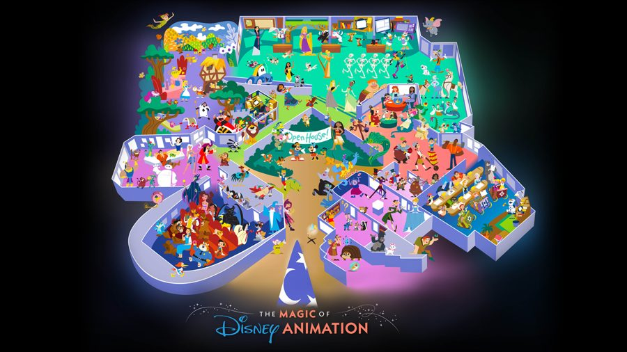

Confirmed bookings are tagged confirmed; everything else is a suggestion, sequenced against the crowd calendar so the flexible days land on the lightest crowds. This is background reference — the day-of details live in Hour by hour below.
Flight lands 5:22 PM (AA, non-stop from DFW) — by the time you've got bags and a rideshare to Bay Lake Tower, you're realistically settling in around 6:30–7:00 PM. Magic Kingdom is technically at its lightest crowd of the whole trip today — but it's also hosting the ticketed Halloween Party tonight, so the park closes to regular guests around 6 PM, and you'll be landing right around then anyway. Easiest call: keep arrival day low-key with a later dinner at Disney Springs (no ticket needed) rather than racing the clock into any park.
EPCOT's lightest day of the whole trip, and it's bookended with resort-guest perks on both ends: Early Theme Park Entry gets you in at 8:30 AM (30 min ahead of the public 9 AM open), and Bay Lake Tower's DVC status also unlocks Extended Evening Theme Park Hours tonight, 9–11 PM. The optimized touring plan actually leans into how light the crowds are rather than rope-dropping: a late-morning start with a Food & Wine Festival grazing stop, Voices of Liberty at the American Adventure, then the afternoon headliners back-to-back on Lightning Lane — Soarin' Across America, Spaceship Earth, Guardians of the Galaxy: Cosmic Rewind, Mission: SPACE (Green track), and Test Track — before a second Food & Wine pass and Luminous: The Symphony of Us at 9 PM closes out the night, with the Extended Evening Hours there as a bonus if there's steam left after.
MK's crowd number is the single lowest anywhere on the calendar this week. Same catch as Sunday: the Halloween Party has the park closing to day guests around 6 PM, so it's a shorter day than usual, but a genuinely empty one. The optimized touring plan front-loads early entry with Seven Dwarfs Mine Train, then Jungle Cruise, The Hall of Presidents, Peter Pan's Flight, and Tiana's Bayou Adventure — all done before 11 AM. A single Lightning Lane pass is booked for TRON Lightcycle/Run (11:25–12:25 PM, $19) on the way to your 12:20 PM lunch at The Beak and Barrel (Adventureland's pirate-themed lounge, confirmation #356252122317, 2 guests). The afternoon picks up with the Disney Festival of Fantasy Parade at 2 PM, Mad Tea Party, three laps on the reimagined Buzz Lightyear's Space Ranger Spin, Pirates of the Caribbean, the freshly reopened Big Thunder Mountain Railroad (new Rainbow Caverns scene), and The Haunted Mansion to close it out — and this time the early closure works in your favor.
7:00 PM — Level 99 at Disney Springs (Premium tickets, 2.5 hours, party of 3, reservation code JFWWSP) — this is where Alex joins the trip. His flight lands at MCO at 4:01 PM (AA #YLVTNE), giving him plenty of time to get to Disney Springs on his own before your 7 PM start. MK's 6 PM closure hands you two a clean window to make the drive over and get settled in first — running till around 9:30 PM.
8:30 AM — Halloween Horror Nights: Behind-the-Screams, Unmasking the Horror Tour — joined by Alex today. A daytime, lights-on walk through the house sets with a guide — not the after-dark scare event — and buffet lunch is included with the 6-house tour. It runs up to 5 hours, so plan on being free by early-to-mid afternoon. From there, your Universal Annual Passes get you into either gate: Universal Studios Florida is open until 5 PM before it flips over for tonight's Horror Nights, and Islands of Adventure — tied for the lowest crowd of the week — stays open into the evening. If the tour wraps by early afternoon there's time to poke around USF for an hour or two before it closes, then move next door into IOA for the rest of the afternoon.
6:40 PM — Dinner at Victoria & Albert's, Disney's Grand Floridian Resort — a party of 3 tonight, with Alex joining you and Dad. This is the big one for the day, so treat it as the hard stop: leave Islands of Adventure by mid-afternoon rather than staying till close. You'll need time for the drive back, a change of clothes, and the trip over from Bay Lake Tower to the Grand Floridian (a short drive or the monorail loop) before your table.
Even on checkout day you're still a Bay Lake Tower guest that morning, so Early Theme Park Entry still applies — and the optimized touring plan uses every minute of it: Mickey & Minnie's Runaway Railway right at rope drop, then Millennium Falcon: Smugglers Run (now the Mandalorian & Grogu Mission), Toy Story Mania!, and Slinky Dog Dash before the crowds build. Late morning fills in with two shows — The Little Mermaid – A Musical Adventure and the Frozen Sing-Along — ahead of a sit-down lunch around 2 PM at The Hollywood Brown Derby. The afternoon picks up with The Twilight Zone Tower of Terror, the Disney Villains: Unfairly Ever After stage show on Sunset Boulevard, the newly re-themed Rock 'n' Roller Coaster Starring The Muppets, and Star Tours, with a stop at the brand-new The Magic of Disney Animation in Animation Courtyard (see note below) before closing out with Fantasmic! at 8:30 PM and the Wonderful World of Animation projection show on the Chinese Theatre at 9. Bay Lake Tower checkout is due by 11 AM — ask Bell Services to hold your bags for the day rather than hauling them into the park. Head to the Helios Grand once the park day winds down — room's ready from 4:00 PM, but no rush if you're out later than that.

For Mike — what this is: a brand-new walk-through experience that just opened Sept 14, 2026 (right at the start of your trip) in Animation Courtyard, replacing the old Magic of Disney Animation building. It's built like an "open house" at Disney's animation studio: you wander through galleries and character "offices" themed to different films, watch the Emmy-winning short Once Upon a Studio in a dedicated theater, catch character meet-and-greets (Mulan, Rapunzel, Stitch and others) staged as animation-department scenes, and there's an Olaf-hosted drawing class if you want to try sketching a character yourself. There's also a padded indoor play area themed to Mary Blair's Alice in Wonderland art, geared toward little kids — probably one to skip for your group. All in, worth budgeting 45–75 minutes.
9:00 AM — Epic Universe Non-Private VIP Experience (order #54977895, 2 guests, check-in at VIP Experience Check-In). This is a shared/group tour — you and Mike join other guests to form a group of up to 12 total, guided along pedestrian pathways through Epic Universe with VIP priority access to the popular rides. Breakfast is included at the start, and the tour runs up to 6 hours (so it wraps sometime around early-to-mid afternoon), after which you keep Universal Express access to participating attractions for the rest of the day on your own. Your two Epic Universe 1-Day tickets are the park admission half of the pair; you need both the day ticket and the VIP tour ticket in hand to join. Since you're already staying at Helios, it's just a walk or short ride over — no early-morning cross-town drive this time.
Every park peaks on Saturday — good news, since you weren't planning to fight the crowds today anyway. It's booked: horseback riding at Fort Wilderness, 9:30–11:00 AM, 2 guests, back on Disney property for the morning. Flight home doesn't leave until 5:55 PM, so there's still plenty of room after the ride and before heading to MCO.